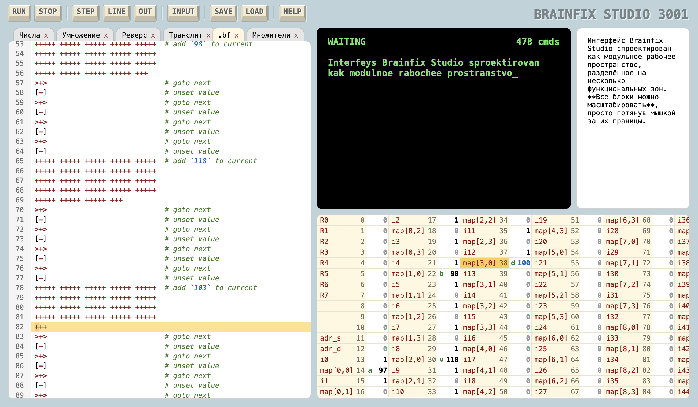
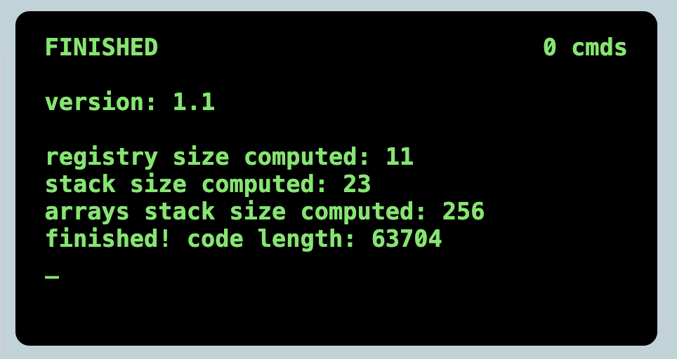
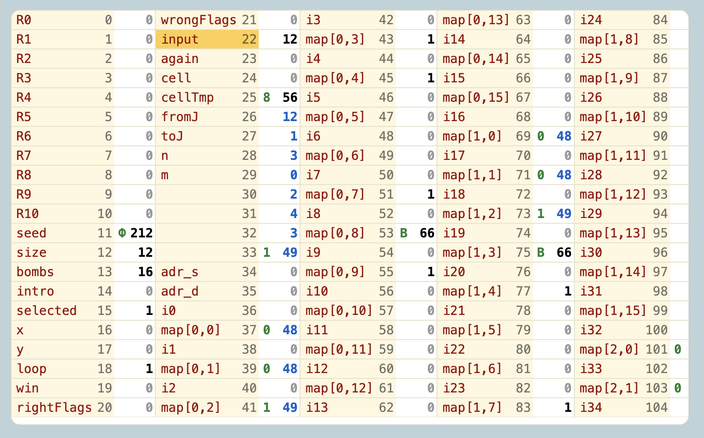
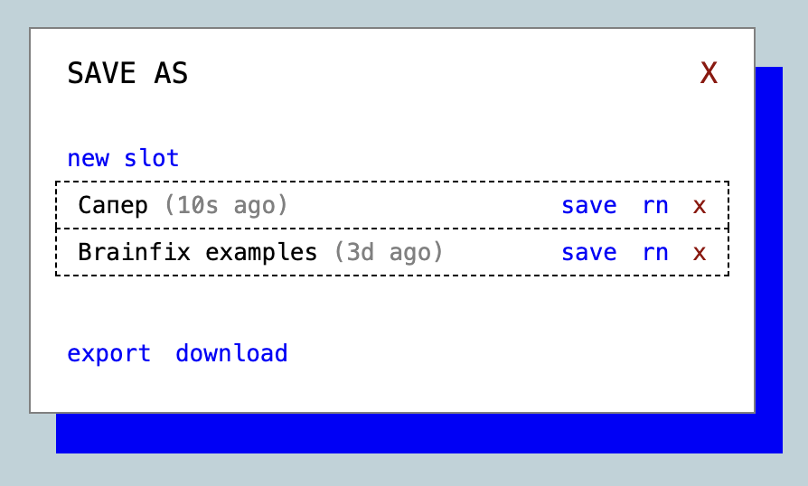

Руководство по Brainfix Studio
Brainfix Studio — это полноценная веб-среда разработки (Web-IDE), предназначенная для написания, компиляции, отладки и запуска программ на языках Brainfix и Brainfuck. Она предоставляет весь необходимый инструментарий для комфортного программирования прямо в браузере и доступна по ссылке:
Общий обзор интерфейса
Интерфейс Brainfix Studio спроектирован как модульное рабочее пространство, разделённое на несколько функциональных зон. Все блоки можно масштабировать, просто потянув мышкой за их границы.

На экране выделяются следующие ключевые области:
-
Панель управления (Блок с кнопками): Расположена в верхней части экрана. Набор доступных инструментов на ней динамически меняется в зависимости от выбранного языка.
-
Редактор кода: Основная рабочая область в левой части экрана. Поддерживает работу с вкладками, раздельную подсветку синтаксиса и позволяет быстро переключаться между высокоуровневыми исходниками и низкоуровневым кодом.
-
Терминал: Консольное окно в правом верхнем углу, куда выводится информация о процессе компиляции
.bfx, а также результат работы.bfпрограммы. Сюда также вводятся данные для потока ввода программы. -
Дамп памяти (Визуализация ленты): Окно в правом нижнем углу, которое показывает текущее состояние ячеек памяти виртуальной машины Brainfuck. В процессе выполнения или пошаговой отладки программы вы можете вживую видеть, как сдвигается указатель и какие значения записываются в ячейки.
-
Файл ввода: Специальный блок, в который можно заранее прописать входные данные для
.bfпрограммы, чтобы не вводить их заново при каждом запуске программы.
Редактор кода
Центральной частью Brainfix Studio является редактор с поддержкой вкладок, который позволяет одновременно работать с несколькими файлами и даже с разными языками программирования.
Две среды в одном интерфейсе
Редактор спроектирован так, чтобы вы могли писать код как на высокоуровневом Brainfix, так и на низкоуровневом Brainfuck. Вкладки визуально разделены по цветам, чтобы вы всегда понимали, с каким языком работаете:
- Белые вкладки — файлы с исходным кодом на языке Brainfix.
- Жёлтые вкладки — файлы с кодом на чистом Brainfuck.
Для создания нового файла достаточно нажать кнопку + (плюс) соответствующего цвета.
Удобная подсветка синтаксиса
Редактор Brainfix Studio оснащён умной контурной подсветкой синтаксиса. Она автоматически адаптируется под выбранный тип вкладки (белая или жёлтая) и выполняет следующие задачи:
- Для Brainfix: Цветом выделяются ключевые слова (команды
in,out), типы данных (byte,char,bool), управляющие конструкции (if,while,for), переменные, комментарии и заголовки. - Для Brainfuck: Редактор подсвечивает различными цветами разные типы комментариев и содержимое некоторых комментариев.
Панель управления (Режим Brainfuck)
Когда вы переключаетесь на жёлтую вкладку с кодом .bf, верхняя панель управления превращается в полноценный пульт управления виртуальной машиной и отладчиком.
Базовое управление
- RUN — запускает программу в обычном режиме. Выполнение идёт на максимальной скорости до первой инструкции запроса ввода
,или до конца файла. - STOP — мгновенно прекращает выполнение запущенной или находящейся на отладке программы и сбрасывает состояние виртуальной машины.
Режим пошаговой отладки
Для того чтобы запустить отладку программы, достаточно нажать кнопку STEP или LINE. Во время отладки в редакторе включается живая индикация: среда наглядно подсвечивает активную строку кода и конкретный символ инструкции, на котором в данный момент остановился интерпретатор.
Для управления шагами доступны три команды:
- STEP — выполняет ровно одну низкоуровневую инструкцию Brainfuck (например, один
+или>) и приостанавливает работу, ожидая дальнейших действий. - LINE — выполняет текущую строку кода целиком и переводит указатель на начало следующей строки.
- OUT — выполняет код на высокой скорости до тех пор, пока программа полностью не выйдет из текущего цикла
[], внутри которого сейчас находится указатель.
Автоматизация тестирования (INPUT)
- INPUT — переключатель режима файла ввода.
Если эта кнопка активна, в правой части интерфейса открывается дополнительное окно «Файл ввода». Вы можете заранее вписать туда любые текстовые данные, которые ваша программа должна прочитать через команды ввода. Это избавляет от необходимости вручную вбивать одни и те же строки в консоль при каждом тестовом перезапуске.
Если данные в подготовленном «файле ввода» закончатся, а программа выполнит очередную инструкцию
,(запрос ввода), виртуальная машина автоматически переключится на ожидание ввода от пользователя в реальном времени через Терминал.
Панель управления (Режим Brainfix)
Когда вы переключаетесь на белую вкладку с исходным кодом .bfx, панель инструментов полностью перестраивается под задачи компиляции, генерации кода и управления метаданными.
Режимы компиляции
-
BUILD — классическая компиляция исходного кода в читаемый Brainfuck. Результат сборки всегда открывается в отдельной новой жёлтой вкладке. Сгенерированный
.bfфайл содержит подробные текстовые комментарии, которые детально описывают, из каких именно фрагментов вашего высокоуровневого кода получились те или иные низкоуровневые блоки инструкций.Вместе с кодом компилятор запекает в комментарии специальную служебную разметку. Благодаря ей окно «Дамп памяти» в Brainfix Studio автоматически подхватывает имена ваших переменных из
.bfxи подписывает соответствующие ячейки на ленте в процессе отладки. -
MIN — компиляция кода в оптимизированный формат
.min.bf. Из итогового файла полностью вырезаются все служебные комментарии и пробелы (сохраняются только мета-заголовки программы). Весь сгенерированный Brainfuck-код упаковывается в одну сплошную компактную строку. Это идеальный режим для получения финального скрипта, готового к переносу на другие платформы.
Модификаторы и автоматизация
-
UGLY — переключатель режима агрессивной оптимизации. Если эта кнопка активна, то при нажатии BUILD или MIN компилятор задействует математические алгоритмы сжатия: все длинные последовательности прибавления или вычитания (например, цепочки из тридцати
+) заменяются на генерацию коротких циклов умножения двух чисел.Это делает итоговый
.bfфайл в разы короче по размеру, но код становится хуже читаемым для человека и выполняется на виртуальной машине чуть дольше из-за накладных расходов на циклы умножения.brainfuck# Программа 'Hello, World!' с выключенной опцией UGLY ++++++++++++++++++++++++++++++++++++++++++++++++++++++++++++++++++++++++.+++++++++++++++++++++++++++++.+++++++..+++.-------------------------------------------------------------------.------------.+++++++++++++++++++++++++++++++++++++++++++++++++++++++.++++++++++++++++++++++++.+++.------.--------.-------------------------------------------------------------------.[-] # Та же программа с включенной опцией UGLY >++++++++[-<+++++++++>]<.>++++[-<+++++++>]<+.+++++++..+++.>++++++[-<----------->]<-.------------.>+++++[-<+++++++++++>]<.>++++[-<++++++>]<.+++.------.--------.>++++++[-<----------->]<-.[-] -
INPUT — переключатель файла ввода. Работает аналогично режиму Brainfuck. Если вы заранее заполнили поле файла ввода на вкладке
.bfx, то при нажатии кнопок компиляции все эти тестовые данные автоматически сдублируются и перенесутся в открывшуюся жёлтую вкладку.bf. Вам не придётся заполнять их заново.
Терминал
Терминал в Brainfix Studio объединяет функции системной консоли, потоков ввода/вывода (in / out) и панели мониторинга производительности виртуальной машины.
Панель мониторинга и статусы
В верхней части окна терминала расположена служебная строка с важной информацией:
- Статус выполнения (Левый верхний угол): Показывает текущее состояние системы в реальном времени. Здесь отображаются системные уведомления о процессе компиляции файла
.bfx, успешном завершении сборки, активном выполнении кода.bfили его остановке. - Счётчик инструкций (Правый верхний угол): Динамический счётчик, который в реальном времени фиксирует точное количество выполненных низкоуровневых инструкций Brainfuck с момента старта программы. Счетчик автоматически сбрасывается на ноль при каждом новом запуске, позволяя вам точно оценивать эффективность алгоритмов и степень их оптимизации компилятором.
Потоки ввода и вывода
Основное пространство терминала отведено под классическое консольное окно:
- Вывод данных: Сюда мгновенно транслируются все символы, числа и строки, отправленные программой через команду
out. - Ввод данных: Когда программа доходит до инструкции чтения
in, вы можете вводить данные прямо в консоль. Также есть возможность вставки(Ctrl + V).
Режимы буферизации ввода
По умолчанию в терминале включена строковая буферизация. Это означает, что все вводимые вами символы сначала накапливаются в строке ввода и отправляются в поток программы только после нажатия клавиши Enter. До тех пор, пока Enter не нажат, вы можете свободно редактировать, стирать или дописывать вводимый текст.
При необходимости буферизацию можно полностью отключить (чтобы программа реагировала на каждое нажатие клавиши мгновенно), а также изменить цвет текста и фона самого терминала. Однако эти параметры задаются не кнопками в интерфейсе, а прямо в исходном коде программы — об этом подробно рассказано в разделе «Метазаголовки».
Лог компиляции в терминале
Когда вы находитесь на белой вкладке (.bfx) и нажимаете кнопку BUILD или MIN, в консоль терминала выводится подробный технический отчёт о процессе сборки программы. Этот лог позволяет оценить, как именно компилятор распределил память на ленте Brainfuck.

Расшифровка параметров лога:
- version — текущая версия языка и компилятора Brainfix.
- registry size computed — количество служебных ячеек памяти, которые компилятор автоматически выделил для выполнения промежуточных вычислений, математических операций, организации условий и временного копирования данных.
- stack size computed — объём памяти (в ячейках), выделенный под хранение всех объявленных в программе одиночных скалярных переменных (
byte,char,bool). - arrays stack size computed — суммарный объём памяти, выделенный на ленте под хранение всех массивов и строк.
- finished! code length — уведомление об успешном завершении компиляции с указанием точной длины получившегося файла
.bf(общее количество сгенерированных низкоуровневых инструкций Brainfuck).
Дамп памяти и директивы разметки
Окно Дамп памяти расположено в правом нижнем углу интерфейса Brainfix Studio. Оно представляет собой визуальную карту, в которой ячейки памяти виртуальной машины Brainfuck перечислены последовательно слева направо и сверху вниз.

Эта область позволяет в реальном времени следить за состоянием памяти исполняемой программы. Каждая ячейка отображает три параметра:
- Индекс ячейки на ленте (выводится в левой части).
- Текстовое значение ячейки в виде символа кодировки Windows-1251.
- Числовое значение ячейки (от 0 до 255).
Помимо значений самих ячеек, в окне дампа визуализируется активный указатель памяти. Ячейка, на которой в данный момент физически находится каретка интерпретатора Brainfuck, выделяется цветом. При выполнении команд сдвига > и < вы сможете наглядно видеть, как этот указатель перемещается по ленте памяти.
Особенности обновления и анимации
- Частота обновления: Дамп памяти рендерится не на каждом шаге указателя, а циклически — по умолчанию каждые 10 миллионов выполненных инструкций, либо в моменты, когда программа останавливается и ожидает ввода новых данных от пользователя.
- Индикация изменений: Ячейки, числовое значение которых изменилось с момента предыдущего цикла рендера, автоматически подсвечиваются синим цветом.
Директивы разметки (@memory)
Чтобы отладка низкоуровневого кода Brainfuck не превращалась в угадывание индексов, в Brainfix Studio встроена поддержка директив разметки памяти. Они записываются в коде как специальные комментарии следующего формата:
# @memory ADDRESS:LABEL ADDRESS:LABEL ...
Для стандартного интерпретатора Brainfuck эти строки остаются обычными комментариями и полностью игнорируются. Однако внутренний модуль Дампа памяти в Brainfix Studio сканирует код программы: при выполнении интерпретатор считывает все директивы разметки, расположенные выше текущей позиции указателя команд, и заменяет стандартные цифровые индексы ячеек на понятные текстовые псевдонимы (LABEL).
# Пример использвания разметки
# Память:
# @memory 0:делимое
# @memory 1:делитель
# @memory 2:частное
# @memory 3:остаток
# @memory 4:tmp
# @memory 5:tmp
# @memory 6:tmp
Автоматическая разметка при компиляции
Когда вы компилируете высокоуровневый код .bfx в формат .bf с помощью кнопки BUILD, компилятор автоматически генерирует и прописывает все директивы разметки. Он преобразует абстрактные переменные в чёткую структуру на ленте памяти:
- Регистры общего назначения (
R0,R1,R2...) — занимают самые первые ячейки ленты. Сюда компилятор складывает промежуточные результаты математических вычислений и логических проверок. - Стек переменных — располагается сразу за регистрами. Ячейки этой области автоматически получают те же имена, которые вы дали одиночным переменным (
byte,char,bool) в исходном коде.bfx. - Служебные ячейки управления массивами (
adr_s,adr_d) — идут следом за стеком переменных. Эти две ячейки критически важны для компилятора: они используются для вычисления адресов и организации «прыжков» по элементам структур данных. - Блок массивов — финальная часть разметки. Под каждый элемент любого объявленного массива компилятор выделяет ровно две физические ячейки:
- Индексная ячейка (
i0,i1,i2...) — служебный маркер, необходимый алгоритмам компилятора для корректного обхода структуры. - Ячейка значения — хранит непосредственные данные элемента. Она подписывается названием массива из
.bfxс указанием индекса, напримерarr[0],arr[1],arr[2].
- Индексная ячейка (
Благодаря такой автоматической разметке, запустив пошаговую отладку скомпилированного кода, вы увидите в окне дампа не безликий массив чисел, а наглядную картину: где лежат ваши переменные, как меняются элементы массива matrix и в каких регистрах прямо сейчас происходят вычисления.
Работа с проектами
В Brainfix Studio встроена полноценная система управления проектами, которая позволяет сохранять результаты вашей работы, экспортировать файлы на компьютер и делиться кодом.
Хранение данных и безопасность
Все проекты, история файлов и настройки интерфейса сохраняются исключительно в локальном хранилище вашего браузера (IndexedDB). Студия работает локально с вашими файлами: исходные коды ваших проектов хранятся только у вас и не сохраняются на сторонних серверах.
Особенность компиляции: Среда разработки работает в гибридном режиме. В то время как хранение данных и исполнение кода происходят полностью локально на вашем компьютере, сам процесс трансляции высокоуровневого кода из
.bfxв низкоуровневый.bfвыполняется на сервере.
Меню сохранения
Для фиксации результатов вашей работы используется меню сохранения. Его кнопка SAVE расположена на верхней панели управления.

Механизм управления проектами внутри этого меню аналогичен системе слотов в компьютерных играх. В меню вы сможете:
- Создать новый слот для текущего проекта.
- Перезаписать существующий слот.
- Переименовать имя проекта в списке слотов.
- Удалить ненужный слот из локальной базы данных.
Для резервного копирования и переноса проектов на другие устройства используются файлы с расширением .bfp (Brainfix Project):
- export — позволяет выгрузить проект и вручную указать конкретную директорию и название файла на вашем компьютере для его сохранения.
- download — осуществляет быстрое скачивание файла проекта
.bfpнапрямую в системную папку «Загрузки» вашего браузера.
Автосохранение состояния и важные ограничения
IDE периодически автоматически сохраняет полное состояние рабочего пространства. В кэш записываются не только тексты программ, но и история изменений файлов (Ctrl + Z / Ctrl + Shift + Z), а также текущие размеры и пропорции всех масштабируемых окон на экране. Если вы случайно закроете вкладку браузера или перезагрузите страницу, Студия восстановит интерфейс ровно в том виде, в котором он был до закрытия.
Из-за встроенного механизма автосохранения не рекомендуется открывать Brainfix Studio в нескольких вкладках или окнах браузера одновременно. Это может привести к конфликту синхронизации. Работайте всегда в одной активной вкладке.
Меню загрузки и встроенные примеры
Для открытия ранее сохранённых проектов или запуска демонстрационных программ используется меню загрузки. Оно вызывается нажатием кнопки LOAD, которая расположена на верхней панели управления.
Интерфейс этого меню разделён на несколько блоков и предоставляет следующие возможности:
Управление локальными сохранениями
В меню отображается полный список ваших личных слотов, созданных ранее через меню сохранения. Прямо отсюда вы можете:
- Загрузить выбранный проект в редактор для продолжения работы.
- Переименовать слот в списке.
- Удалить старое или ненужное локальное сохранение.
Готовые демонстрационные программы
В отдельном блоке меню загрузки представлены предустановленные демонстрационные программы (включая сложные проекты вроде интерактивного «Сапёра»). Каждая демо-программа поставляется в виде скомпилированного низкоуровневого файла .bf вместе с её оригинальным высокоуровневым исходным кодом на .bfx.
Вы можете свободно загрузить любой демонстрационный проект, изучить его архитектуру, отредактировать код под свои нужды и сохранить получившиеся изменения как свой собственный локальный проект.
Импорт внешних проектов
В самом низу меню загрузки расположена кнопка import. Она предназначена для открытия файлов проектов формата .bfp, сохранённых на вашем компьютере. При выборе файла через это меню он импортируется в IDE и разворачивается во вкладках редактора точно так же, как если бы вы загрузили его из обычного локального слота.
Метазаголовки (Конфигурация программы)
Метазаголовки — это специальные служебные комментарии, которые используются компилятором и средой разработки Brainfix Studio для настройки параметров сборки, интерфейса и выполнения кода.
# Пример метазаголовков для Сапера
# @TITLE: САПЕР!
# @BUFFERED_INPUT: FALSE
# @STEPS_PER_FRAME: 50M
>>>>>>>[-]< <<<+++[->>>>++++++ <<<<]>>>>>[-]+++++ +<<<<<++++
...
Главное преимущество такого подхода заключается в том, что конфигурация IDE и компилятора меняется индивидуально для каждого файла, а не для всей среды разработки в целом.
Правила размещения и синтаксис
- Расположение: Метазаголовки должны находиться строго в самом начале файла до первой исполняемой инструкции программы (как в
.bf, так и в.bfx). Если перед метазаголовком встретится хотя бы одна команда языка, он будет проигнорирован и воспринят как обычный комментарий. - Регистр: Имена метазаголовков не чувствительны к регистру (
@TITLEи@titleработают одинаково). - Формат записи: Допускается три варианта разделения ключа и значения — через пробел, двоеточие или знак равенства.
# ПРАВИЛЬНО: заголовки объявлены до кода
# @title: Моя программа
# @console_color = #00ff00
byte x = 10;
out x;
byte x = 10;
# НЕПРАВИЛЬНО: заголовки объявлены после исполняемой инструкции
# @title: Моя программа (Будет проигнорировано!)
out x;
Общие заголовки (для .bf и .bfx)
-
# @title
Задает имя программы, которое отображается в названии текущей вкладки редактора Студии.brainfix# @title: Hello, World! out 'Hello, World!');
Заголовки времени выполнения (для .bf)
Эти заголовки управляют поведением виртуальной машины во время работы скрипта. Важно помнить, что все настройки действуют только в процессе выполнения программы и автоматически сбрасываются на значения по умолчанию сразу после её завершения.
-
# @console_color
Задаёт цвет текста в окне Терминала. Значение принимает любой валидный CSS-формат цвета: строковое имя, HEX-код или RGB.
Примеры:# @console_color redили# @console_color #ff0000 -
# @buffered_input
Включает или отключает строковую буферизацию ввода в Терминале. Когда буферизация включена, введенные пользователем данные отправляются в поток программы только после нажатия клавиши Enter. Когда буферизация выключена, программа мгновенно считывает каждый символ в момент нажатия клавиши.- Включено (по умолчанию):
true,yes,on,y,1 - Выключено:
false,no,off,n,0 - Пример:
# @buffered_input false
- Включено (по умолчанию):
-
# @steps_per_frame
Задаёт количество низкоуровневых инструкций Brainfuck, которое виртуальная машина должна выполнить перед каждым обновлением (рендером) интерфейса. Отрисовка текста в Терминале, анимация Дампа памяти и подсветка текущей строки в редакторе происходят циклически после прохождения указанного лимита шагов (или когда программа засыпает в ожидании ввода).- По умолчанию рендер происходит каждые 10M (10 миллионов) инструкций.
- Допустимые суффиксы: K (тысячи), M (миллионы) или чистые числа.
- Применение: Маленькие значения (например,
100) идеальны для визуального наблюдения за замедленным пошаговым выполнением алгоритма. Большие значения (например,100M) помогают избавиться от фризов и подтормаживаний интерфейса, если программа циклически перерисовывает много контента при каждом пользовательском вводе. - Пример:
# @steps_per_frame 100K
Заголовки для
.bfможно и нужно прописывать в заголовках кода.bfx. При сборке компилятор автоматически скопирует их в начало сгенерированного файла, избавив вас от необходимости настраивать их вручную после каждой компиляции.
Заголовки компилятора (только для .bfx)
Эти директивы влияют на логику работы транслятора при сборке высокоуровневого кода.
-
# @comment_level
Устанавливает уровень документирования сгенерированного кода.bf. Всего компилятор умеет создавать три типа комментариев:- Разметка памяти (
# @memory ...) — служебные данные для именования ячеек в окне дампа. - Исходный код (
### byte a = 10;) — синие комментарии, показывающие, из какой строки.bfxполучился следующий кусок Brainfuck-кода. - Пояснения операций (
# add 72 to R0) — зеленые комментарии, описывающие самые низкоуровневые действия компилятора.
Доступные значения конфигурации:
full(по умолчанию) — сохраняются все комментарии.source— остаются только директивыmemoryи синие комментарии исходного кода.memory— в коде остаются исключительно директивы разметки памяти.none— сборка без комментариев. На выходе получается чистый структурированный Brainfuck-код, содержащий только метазаголовки.- Пример:
# @comment_level source
- Разметка памяти (
-
# @version
Определяет версию языка и компилятора.1.0— первая версия компилятора и синтаксиса.1.1(по умолчанию) — актуальная версия. Включает в себя глобальные улучшения, кардинально оптимизирующие и ускоряющие работу с многомерными массивами.- Пример:
# @version 1.0